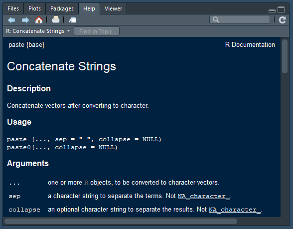

swirl()
| Welcome to swirl! Please sign in. If you've been here before, use the same name as you
| did then. If you are new, call yourself something unique.
What shall I call you? Krishnakanth Allika
| Please choose a course, or type 0 to exit swirl.
1: R Programming
2: Take me to the swirl course repository!
Selection: 1
| Please choose a lesson, or type 0 to return to course menu.
1: Basic Building Blocks 2: Workspace and Files 3: Sequences of Numbers
4: Vectors 5: Missing Values 6: Subsetting Vectors
7: Matrices and Data Frames 8: Logic 9: Functions
10: lapply and sapply 11: vapply and tapply 12: Looking at Data
13: Simulation 14: Dates and Times 15: Base Graphics
Selection: 9
| | 0%
| Functions are one of the fundamental building blocks of the R language. They are small
| pieces of reusable code that can be treated like any other R object.
...
|== | 2%
| If you've worked through any other part of this course, you've probably used some
| functions already. Functions are usually characterized by the name of the function
| followed by parentheses.
...
|=== | 4%
| Let's try using a few basic functions just for fun. The Sys.Date() function returns a
| string representing today's date. Type Sys.Date() below and see what happens.
Sys.Date()
[1] "2020-04-15"
| Keep up the great work!
|===== | 6%
| Most functions in R return a value. Functions like Sys.Date() return a value based on
| your computer's environment, while other functions manipulate input data in order to
| compute a return value.
...
|======= | 8%
| The mean() function takes a vector of numbers as input, and returns the average of all
| of the numbers in the input vector. Inputs to functions are often called arguments.
| Providing arguments to a function is also sometimes called passing arguments to that
| function. Arguments you want to pass to a function go inside the function's
| parentheses. Try passing the argument c(2, 4, 5) to the mean() function.
mean(c(2,4,5))
[1] 3.666667
| All that practice is paying off!
|======== | 10%
| Functions usually take arguments which are variables that the function operates on. For
| example, the mean() function takes a vector as an argument, like in the case of
| mean(c(2,6,8)). The mean() function then adds up all of the numbers in the vector and
| divides that sum by the length of the vector.
...
|========== | 12%
| In the following question you will be asked to modify a script that will appear as soon
| as you move on from this question. When you have finished modifying the script, save
| your changes to the script and type submit() and the script will be evaluated. There
| will be some comments in the script that opens up, so be sure to read them!
...
|=========== | 14%
| The last R expression to be evaluated in a function will become the return value of
| that function. We want this function to take one argument, x, and return x without
| modifying it. Delete the pound sign so that x is returned without any modification.
| Make sure to save your script before you type submit().
# You're about to write your first function! Just like you would assign a value
# to a variable with the assignment operator, you assign functions in the following
# way:
#
# function_name <- function(arg1, arg2){
# # Manipulate arguments in some way
# # Return a value
# }
#
# The "variable name" you assign will become the name of your function. arg1 and
# arg2 represent the arguments of your function. You can manipulate the arguments
# you specify within the function. After sourcing the function, you can use the
# function by typing:
#
# function_name(value1, value2)
#
# Below we will create a function called boring_function. This function takes
# the argument `x` as input, and returns the value of x without modifying it.
# Delete the pound sign in front of the x to make the function work! Be sure to
# save this script and type submit() in the console after you make your changes.
boring_function <- function(x) {
x
}
submit()
| Sourcing your script...
| You got it right!
|============= | 16%
| Now that you've created your first function let's test it! Type: boring_function('My
| first function!'). If your function works, it should just return the string: 'My first
| function!'
boring_function('My first function!')
[1] "My first function!"
| You're the best!
|=============== | 18%
| Congratulations on writing your first function. By writing functions, you can gain
| serious insight into how R works. As John Chambers, the creator of R once said:
|
| To understand computations in R, two slogans are helpful: 1. Everything that exists is
| an object. 2. Everything that happens is a function call.
...
|================ | 20%
| If you want to see the source code for any function, just type the function name
| without any arguments or parentheses. Let's try this out with the function you just
| created. Type: boring_function to view its source code.
boring_function
function(x) {
x
}
<bytecode: 0x00000000190a1b98>
| Keep working like that and you'll get there!
|================== | 22%
| Time to make a more useful function! We're going to replicate the functionality of the
| mean() function by creating a function called: my_mean(). Remember that to calculate
| the average of all of the numbers in a vector you find the sum of all the numbers in
| the vector, and then divide that sum by the number of numbers in the vector.
...
|==================== | 24%
| Make sure to save your script before you type submit().
# You're free to implement the function my_mean however you want, as long as it
# returns the average of all of the numbers in `my_vector`.
#
# Hint #1: sum() returns the sum of a vector.
# Ex: sum(c(1, 2, 3)) evaluates to 6
#
# Hint #2: length() returns the size of a vector.
# Ex: length(c(1, 2, 3)) evaluates to 3
#
# Hint #3: The mean of all the numbers in a vector is equal to the sum of all of
# the numbers in the vector divided by the size of the vector.
#
# Note for those of you feeling super clever: Please do not use the mean()
# function while writing this function. We're trying to teach you something
# here!
#
# Be sure to save this script and type submit() in the console after you make
# your changes.
my_mean <- function(my_vector) {
# Write your code here!
# Remember: the last expression evaluated will be returned!
sum(my_vector)/length(my_vector)
}
submit()
| Sourcing your script...
| You got it right!
|===================== | 27%
| Now test out your my_mean() function by finding the mean of the vector c(4, 5, 10).
my_mean(c(4,5,10))
[1] 6.333333
| You are doing so well!
|======================= | 29%
| Next, let's try writing a function with default arguments. You can set default values
| for a function's arguments, and this can be useful if you think someone who uses your
| function will set a certain argument to the same value most of the time.
...
|======================== | 31%
| Make sure to save your script before you type submit().
# Let me show you an example of a function I'm going to make up called
# increment(). Most of the time I want to use this function to increase the
# value of a number by one. This function will take two arguments: "number" and
# "by" where "number" is the digit I want to increment and "by" is the amount I
# want to increment "number" by. I've written the function below.
#
# increment <- function(number, by = 1){
# number + by
# }
#
# If you take a look in between the parentheses you can see that I've set
# "by" equal to 1. This means that the "by" argument will have the default
# value of 1.
#
# I can now use the increment function without providing a value for "by":
# increment(5) will evaluate to 6.
#
# However if I want to provide a value for the "by" argument I still can! The
# expression: increment(5, 2) will evaluate to 7.
#
# You're going to write a function called "remainder." remainder() will take
# two arguments: "num" and "divisor" where "num" is divided by "divisor" and
# the remainder is returned. Imagine that you usually want to know the remainder
# when you divide by 2, so set the default value of "divisor" to 2. Please be
# sure that "num" is the first argument and "divisor" is the second argument.
#
# Hint #1: You can use the modulus operator %% to find the remainder.
# Ex: 7 %% 4 evaluates to 3.
#
# Remember to set appropriate default values! Be sure to save this
# script and type submit() in the console after you write the function.
remainder <- function(num, divisor=2) {
# Write your code here!
# Remember: the last expression evaluated will be returned!
num%%divisor
}
submit()
| Sourcing your script...
| Keep working like that and you'll get there!
|========================== | 33%
| Let's do some testing of the remainder function. Run remainder(5) and see what happens.
remainder(5)
[1] 1
| You nailed it! Good job!
|============================ | 35%
| Let's take a moment to examine what just happened. You provided one argument to the
| function, and R matched that argument to 'num' since 'num' is the first argument. The
| default value for 'divisor' is 2, so the function used the default value you provided.
...
|============================= | 37%
| Now let's test the remainder function by providing two arguments. Type: remainder(11,
| 5) and let's see what happens.
remainder(11,5)
[1] 1
| You got it!
|=============================== | 39%
| Once again, the arguments have been matched appropriately.
...
|================================= | 41%
| You can also explicitly specify arguments in a function. When you explicitly designate
| argument values by name, the ordering of the arguments becomes unimportant. You can try
| this out by typing: remainder(divisor = 11, num = 5).
remainder(divisor = 11, num = 5)
[1] 5
| You're the best!
|================================== | 43%
| As you can see, there is a significant difference between remainder(11, 5) and
| remainder(divisor = 11, num = 5)!
...
|==================================== | 45%
| R can also partially match arguments. Try typing remainder(4, div = 2) to see this
| feature in action.
remainder(4, div = 2)
[1] 0
| Excellent work!
|====================================== | 47%
| A word of warning: in general you want to make your code as easy to understand as
| possible. Switching around the orders of arguments by specifying their names or only
| using partial argument names can be confusing, so use these features with caution!
...
|======================================= | 49%
| With all of this talk about arguments, you may be wondering if there is a way you can
| see a function's arguments (besides looking at the documentation). Thankfully, you can
| use the args() function! Type: args(remainder) to examine the arguments for the
| remainder function.
args(remainder)
function (num, divisor = 2)
NULL
| You are quite good my friend!
|========================================= | 51%
| You may not realize it but I just tricked you into doing something pretty interesting!
| args() is a function, remainder() is a function, yet remainder was an argument for
| args(). Yes it's true: you can pass functions as arguments! This is a very powerful
| concept. Let's write a script to see how it works.
...
|========================================== | 53%
| Make sure to save your script before you type submit().
# You can pass functions as arguments to other functions just like you can pass
# data to functions. Let's say you define the following functions:
#
# add_two_numbers <- function(num1, num2){
# num1 + num2
# }
#
# multiply_two_numbers <- function(num1, num2){
# num1 * num2
# }
#
# some_function <- function(func){
# func(2, 4)
# }
#
# As you can see we use the argument name "func" like a function inside of
# "some_function()." By passing functions as arguments
# some_function(add_two_numbers) will evaluate to 6, while
# some_function(multiply_two_numbers) will evaluate to 8.
#
# Finish the function definition below so that if a function is passed into the
# "func" argument and some data (like a vector) is passed into the dat argument
# the evaluate() function will return the result of dat being passed as an
# argument to func.
#
# Hints: This exercise is a little tricky so I'll provide a few example of how
# evaluate() should act:
# 1. evaluate(sum, c(2, 4, 6)) should evaluate to 12
# 2. evaluate(median, c(7, 40, 9)) should evaluate to 9
# 3. evaluate(floor, 11.1) should evaluate to 11
evaluate <- function(func, dat){
# Write your code here!
# Remember: the last expression evaluated will be returned!
func(dat)
}
submit()
| Sourcing your script...
| You are really on a roll!
|============================================ | 55%
| Let's take your new evaluate() function for a spin! Use evaluate to find the standard
| deviation of the vector c(1.4, 3.6, 7.9, 8.8).
evaluate(sd,c(1.4, 3.6, 7.9, 8.8))
[1] 3.514138
| All that practice is paying off!
|============================================== | 57%
| The idea of passing functions as arguments to other functions is an important and
| fundamental concept in programming.
...
|=============================================== | 59%
| You may be surprised to learn that you can pass a function as an argument without first
| defining the passed function. Functions that are not named are appropriately known as
| anonymous functions.
...
|================================================= | 61%
| Let's use the evaluate function to explore how anonymous functions work. For the first
| argument of the evaluate function we're going to write a tiny function that fits on one
| line. In the second argument we'll pass some data to the tiny anonymous function in the
| first argument.
...
|=================================================== | 63%
| Type the following command and then we'll discuss how it works:
| evaluate(function(x){x+1}, 6)
evaluate(function(x){x+1}, 6)
[1] 7
| Keep up the great work!
|==================================================== | 65%
| The first argument is a tiny anonymous function that takes one argument x and returns
| x+1. We passed the number 6 into this function so the entire expression evaluates to
| 7.
...
|====================================================== | 67%
| Try using evaluate() along with an anonymous function to return the first element of
| the vector c(8, 4, 0). Your anonymous function should only take one argument which
| should be a variable x.
evaluate(function(x){x[1]},c(8, 4, 0))
[1] 8
| You are really on a roll!
|======================================================== | 69%
| Now try using evaluate() along with an anonymous function to return the last element of
| the vector c(8, 4, 0). Your anonymous function should only take one argument which
| should be a variable x.
evaluate(function(x){tail(x,n=1)},c(8, 4, 0))
[1] 0
| All that hard work is paying off!
|========================================================= | 71%
| For the rest of the course we're going to use the paste() function frequently. Type
| ?paste so we can take a look at the documentation for the paste function.
?paste

| Nice work!
|=========================================================== | 73%
| As you can see the first argument of paste() is ... which is referred to as an
| ellipsis or simply dot-dot-dot. The ellipsis allows an indefinite number of arguments
| to be passed into a function. In the case of paste() any number of strings can be
| passed as arguments and paste() will return all of the strings combined into one
| string.
...
|============================================================ | 76%
| Just to see how paste() works, type paste("Programming", "is", "fun!")
paste("Programming", "is", "fun!")
[1] "Programming is fun!"
| You are quite good my friend!
|============================================================== | 78%
| Time to write our own modified version of paste().
...
|================================================================ | 80%
| Make sure to save your script before you type submit().
# The ellipses can be used to pass on arguments to other functions that are
# used within the function you're writing. Usually a function that has the
# ellipses as an argument has the ellipses as the last argument. The usage of
# such a function would look like:
#
# ellipses_func(arg1, arg2 = TRUE, ...)
#
# In the above example arg1 has no default value, so a value must be provided
# for arg1. arg2 has a default value, and other arguments can come after arg2
# depending on how they're defined in the ellipses_func() documentation.
# Interestingly the usage for the paste function is as follows:
#
# paste (..., sep = " ", collapse = NULL)
#
# Notice that the ellipses is the first argument, and all other arguments after
# the ellipses have default values. This is a strict rule in R programming: all
# arguments after an ellipses must have default values. Take a look at the
# simon_says function below:
#
# simon_says <- function(...){
# paste("Simon says:", ...)
# }
#
# The simon_says function works just like the paste function, except the
# begining of every string is prepended by the string "Simon says:"
#
# Telegrams used to be peppered with the words START and STOP in order to
# demarcate the beginning and end of sentences. Write a function below called
# telegram that formats sentences for telegrams.
# For example the expression `telegram("Good", "morning")` should evaluate to:
# "START Good morning STOP"
telegram <- function(...){
paste("START",...,"STOP")
}
submit()
| Sourcing your script...
| All that hard work is paying off!
|================================================================= | 82%
| Now let's test out your telegram function. Use your new telegram function passing in
| whatever arguments you wish!
telegram("Happy","birthday")
[1] "START Happy birthday STOP"
| You are doing so well!
|=================================================================== | 84%
| Make sure to save your script before you type submit().
# Let's explore how to "unpack" arguments from an ellipses when you use the
# ellipses as an argument in a function. Below I have an example function that
# is supposed to add two explicitly named arguments called alpha and beta.
#
# add_alpha_and_beta <- function(...){
# # First we must capture the ellipsis inside of a list
# # and then assign the list to a variable. Let's name this
# # variable `args`.
#
# args <- list(...)
#
# # We're now going to assume that there are two named arguments within args
# # with the names `alpha` and `beta.` We can extract named arguments from
# # the args list by using the name of the argument and double brackets. The
# # `args` variable is just a regular list after all!
#
# alpha <- args[["alpha"]]
# beta <- args[["beta"]]
#
# # Then we return the sum of alpha and beta.
#
# alpha + beta
# }
#
# Have you ever played Mad Libs before? The function below will construct a
# sentence from parts of speech that you provide as arguments. We'll write most
# of the function, but you'll need to unpack the appropriate arguments from the
# ellipses.
mad_libs <- function(...){
# Do your argument unpacking here!
args<-list(...)
place<-args[["place"]]
adjective<-args[["adjective"]]
noun<-args[["noun"]]
# Don't modify any code below this comment.
# Notice the variables you'll need to create in order for the code below to
# be functional!
paste("News from", place, "today where", adjective, "students took to the streets in protest of the new", noun, "being installed on campus.")
}
submit()
| Sourcing your script...
| You are amazing!
|===================================================================== | 86%
| Time to use your mad_libs function. Make sure to name the place, adjective, and noun
| arguments in order for your function to work.
mad_libs(place="India",adjective="many",noun="'Get back to your classrooms and learn something' billboard")
[1] "News from India today where many students took to the streets in protest of the new 'Get back to your classrooms and learn something' billboard being installed on campus."
| You are doing so well!
|====================================================================== | 88%
| We're coming to the end of this lesson, but there's still one more idea you should be
| made aware of.
...
|======================================================================== | 90%
| You're familiar with adding, subtracting, multiplying, and dividing numbers in R. To do
| this you use the +, -, *, and / symbols. These symbols are called binary operators
| because they take two inputs, an input from the left and an input from the right.
...
|========================================================================= | 92%
| In R you can define your own binary operators. In the next script I'll show you how.
...
|=========================================================================== | 94%
| Make sure to save your script before you type submit().
# The syntax for creating new binary operators in R is unlike anything else in
# R, but it allows you to define a new syntax for your function. I would only
# recommend making your own binary operator if you plan on using it often!
#
# User-defined binary operators have the following syntax:
# %[whatever]%
# where [whatever] represents any valid variable name.
#
# Let's say I wanted to define a binary operator that multiplied two numbers and
# then added one to the product. An implementation of that operator is below:
#
# "%mult_add_one%" <- function(left, right){ # Notice the quotation marks!
# left * right + 1
# }
#
# I could then use this binary operator like `4 %mult_add_one% 5` which would
# evaluate to 21.
#
# Write your own binary operator below from absolute scratch! Your binary
# operator must be called %p% so that the expression:
#
# "Good" %p% "job!"
#
# will evaluate to: "Good job!"
"%p%" <- function(x,y){ # Remember to add arguments!
paste(x,y)
}
submit()
| Sourcing your script...
| Excellent job!
|============================================================================= | 96%
| You made your own binary operator! Let's test it out. Paste together the strings: 'I',
| 'love', 'R!' using your new binary operator.
"I" %p% "love" %p% "R!"
[1] "I love R!"
| You are doing so well!
|============================================================================== | 98%
| We've come to the end of our lesson! Go out there and write some great functions!
...
|================================================================================| 100%
| Would you like to receive credit for completing this course on Coursera.org?
1: Yes
2: No
Selection: 1
What is your email address? xxxxxx@xxxxxxxxxxxx
What is your assignment token? xXxXxxXXxXxxXXXx
Grade submission succeeded!
| Keep working like that and you'll get there!
| You've reached the end of this lesson! Returning to the main menu...
| Please choose a course, or type 0 to exit swirl.
1: R Programming
2: Take me to the swirl course repository!
Selection: 0
| Leaving swirl now. Type swirl() to resume.
ls()
[1] "%p%" "boring_function" "evaluate" "mad_libs"
[5] "my_mean" "remainder" "telegram"
rm(list=ls())